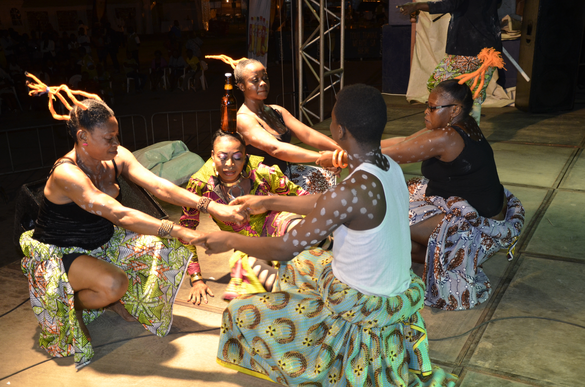

Qui sont les Bassa ?
Le peuple Bassa est l'un des plus anciens peuples bantu du Cameroun. Autochtone du pays, il est installé dans la région du Littoral (notamment à Douala) depuis au moins le XVIIIᵉ siècle, bien avant l'arrivée des Portugais sur la côte ouest-africaine. Les Bassa constituent ce qu'on appelle la « vitrine de l'histoire du Cameroun », car leur présence précoce et leur expansion territoriale ont marqué profondément la mémoire collective du pays.

Origines Lointaines : De l'Égypte Antique à l'Afrique Centrale
Selon les sources orales vivantes, les origines du peuple Bassa remontent jusqu'à l'Égypte antique. Leur migration aurait commencé près du Nil, en franchissant les frontières de l'Égypte et du Soudan.Ils ont d'abord occupé la vallée du Logone, passant par Kenem Bornou. Ensuite, ils ont longé le fleuve pour se réfugier à Guelingdeng, avant de s'installer dans les monts Mandara.Finalement, ils ont migré vers l'Afrique centrale, notamment vers les régions de l'actuelle République du Congo, en suivant les grands fleuves et forêts.

La Grande Migration et la Scission : Apparition des « Babimbi »
Le temps passa, et le clan Bassa continua sa migration vers le sud. Ils arrivèrent face au fleuve Sanaga, qui séparait leur futur de leur passé. En pirogue, ils traversèrent, mais quelque chose d'imprévu se produisit…Au milieu du parcours, certains membres du clan cessèrent de marcher. Ils se reposèrent, se laissèrent aller à la fatigue. Ceux qui sont restés derrière furent appelés Babimbi, terme qui signifie littéralement être allongé, étalé, couché.Cette scission, parfois décrite comme une marque d'indolence, donna naissance à deux branches distinctes du peuple Bassa. Mais dans la mémoire collective, c'est aussi un rappel : la migration exige la persévérance. Ceux qui avancent, survivent. Ceux qui restent, deviennent l'histoire.

Installation à Douala et Coexistence avec les Bakoko
Après des siècles de desplazement, les Bassa retrouvèrent leur terre d'ancrage : Douala, autrefois appelée Monashambeach. Là, ils s'installèrent en compagnie de leurs frères Bakoko, les premiers à occuper cette terre fertile.Ils ne furent pas des envahisseurs, mais des retourneurs. Ils savaient que cette terre était la leur, qu'ils revenaient à leur point de départ, là où tout avait commencé. Leur territoire s'étendit de l'Afrique centrale jusqu'à l'Afrique de l'Ouest, formant plusieurs foyers qui gardent encore aujourd'hui le lien avec la terre bassa.
L'Ancêtre Commun : Mban et l'Étymologie du Nom « Bassa »
Dans la tradition orale bassa, il est un nom que l'on chuchote avec respect : Mban. Tous les Bassa se reconnaissent comme les fils de Mban, unis par ce lien sacré qui dépasse les générations.Mais pourquoi « Bassa » ? L'histoire raconte une querelle mémorable. Lors d'un retour de chasse, les fils de Mban se disputèrent le partage d'un serpent qu'ils avaient ramené. Le mot « Nsa » (la rétribution, le partage) devint « Bassa » dans le pluriel, signifiant les ravisseurs.Cette anecdote, loin d'être un simple détail, incarne l'esprit du peuple : un peuple qui se bat pour ce qui lui appartient, qui défend son droit, qui refuse de se laisser dépouiller. Les autres ancêtres tribaux, les SOGOL, sont les gardiens des générations suivantes, formant le panthéon bassa que l'on honore encore aujourd'hui.
Les Rives du Nil
Le voyage mémoriel du peuple Bassa prend racine aux confins de la haute Égypte et de la riche vallée du Nil. Les traditions orales et les récits des initiés évoquent une ère lointaine de savoirs et de splendeur, où les fondements philosophiques et spirituels du Mbog commençaient à s'aligner harmonieusement avec les lois du cosmos.